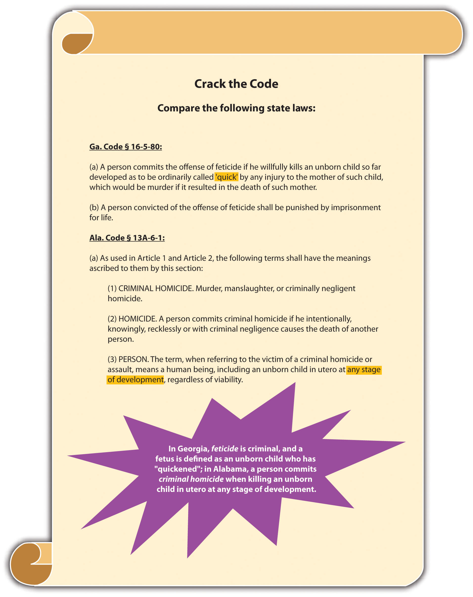

In this section, you learn the definition of homicideThe killing of one human being by another. and the meaning of human being, which vary from state to state. You also learn that suicide is not criminal, but assisted suicide might be, depending on the jurisdiction.
Homicide is the killing of one human being by another. Homicide is not always criminal. For example, a lawful execution pursuant to the death penalty is homicide, but it is not criminal homicide.
Homicide law in the United States has its origins in the English common law. Oxford professor Sir William Blackstone defined homicide as justifiable, excusable, or felonious. Justifiable homicides were not criminal because they did not include the concept of guilt. Excusable homicides were not criminal because they included minimal guilt. Felonious homicides were criminal and were considered the most heinous offenses known to man.
Initially at common law, every felonious or criminal homicide was punished by death. Gradually, as the law evolved, unlawful killings were divided into murder and manslaughter based on the defendant’s criminal intent. Murder had the criminal intent element of malice aforethought and remained a capital offense. Manslaughter was an unlawful killing without malice and was punished by incarceration.
In modern times, most states define criminal homicide and its elements in statutes, which often are interpreted by case law. Many jurisdictions continue to follow Blackstone’s philosophy and the common-law division between murder and manslaughter, as is discussed in this chapter.
An essential component of every criminal case, including criminal homicide, is corpus delictiThe substance of the case.. Corpus delicti is the substance of the crime at issue. The prosecution must prove corpus delicti beyond a reasonable doubt, with evidence other than a defendant’s confession.People v. Ochoa, 966 P.2d 442 (1998), accessed February 13, 2011, http://scholar.google.com/scholar_case?case=13299597995178567741&q= corpus+delicti+criminal+homicide&hl=en&as_sdt=2,5. Although a detailed discussion of corpus delicti is beyond the scope of this text, corpus delicti in a criminal homicide case consists of the death of a victim, caused by the defendant, in an unlawful manner.
Often the victim’s body is never discovered, which could make it more difficult for the prosecution to prove corpus delicti but not impossible. If there is sufficient circumstantial or direct evidence, such as bloodstains, surveillance footage, or witness testimony, the prosecution can prove corpus delicti without the victim’s body and can convict the defendant of criminal homicide.
FeticideThe intentional destruction of a fetus. is the intentional destruction of a fetus. At common law, a human being could not be the victim of criminal homicide unless it was born alive.Keeler v. Superior Court, 2 Cal.3d 619 (1970), accessed July 10, 2010, http://scholar.google.com/scholar_case?case=2140632244672927312&hl=en&as_sdt=2&as_vis=1&oi=scholarr. The Model Penal Code takes this approach and defines human being as “a person who has been born and is alive” (Model Penal Code § 210.0 (1)). The modern trend in many jurisdictions is to include the fetus as a victim in a criminal homicide or feticide statute, excepting abortion. The definition of fetus is either set forth in the criminal homicide or feticide statute or created by case law. Many states and the federal government consider an embryo a fetus from the time of conception.Ala. Code § 13A-6-1, accessed February 13, 2010, http://www.legislature.state.al.us/codeofalabama/1975/13A-6-1.htm. Other states determine that a fetus is formed when the child has “quickened,” or is able to move within the womb—about four to five months after conception.Fla. Stat. § 782.09, accessed July 10, 2010, http://www.lawserver.com/law/state/florida/statutes/florida_statutes_782-09. A few states do not consider the fetus a victim of criminal homicide or feticide until it is viable and can survive outside the womb.Ind. Code §35-42-1-1(4), accessed July 10, 2010, http://www.in.gov/legislative/ic/code/title35/ar42/ch1.html.
Figure 9.1 Crack the Code
At common law, suicide was a crime. The punishment was forfeiture of the lands owned by the deceased. In modern times, most states do not criminalize suicide. However, almost all jurisdictions make it a crime to assist a suicide, and the US Supreme Court has held these statutes constitutional.Washington v. Glucksberg, 521 U.S. 702 (1997), accessed July 10, 2010, http://scholar.google.com/scholar_case?case=17920279791882194984&q= Washington+v.+Glucksberg&hl=en&as_sdt=2,5. Several states have special statutes that specifically punish assisted suicide less severely than their first- or second-degree murder statutes.Tex. Penal Code § 22.08, accessed July 10, 2010, http://law.onecle.com/texas/penal/22.08.00.html. A minority of states allow terminally ill patients to end their lives with the assistance of a physician.Or. Rev. Stat. § 127.800 et seq., accessed July 10, 2010, http://law.onecle.com/oregon/127-powers-of-attorney-advance-directives/index.html. The Model Penal Code provides that “[a] person who purposely aids or solicits another to commit suicide is guilty of a felony of the second degree if his conduct causes such suicide or an attempted suicide” (Model Penal Code § 210.5(2)).
In modern times, in many jurisdictions feticide is a crime (excepting abortion), and suicide is not. At common law, the following applied:
Answer the following questions. Check your answers using the answer key at the end of the chapter.